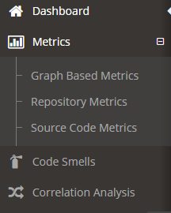

SEAgle: Effortless Software Evolution Analysis
Seagle is an online platform for Software Repository Mining, and evolution analysis of java projects. It facilitates the collection of project related data, organizes relevant information in comprehensible reports and provides a useful tool for empirical research.
Overview
The development of the platform was driven by the following key issues:
- the platform should be easy to use. To this end we opted for a Web based platform enabling users to analyze a repository by a single click (either selection of an already analyzed project or by providing the git repository URI).
- software repositories encompass a project’s history. As a result, all reported information spans across all available versions, i.e. constitutes a form of software evolution analysis.
- Any software system has several facets. Therefore, we offer multiple views concerning commit-related metrics, source code metrics and graph based metrics.
- Empirical studies very often focus on the investigation of relations among variables. To satisfy this need we offer direct correlation analysis between any two monitored variables. (for this reason the x-axis is common on all diagrams and represents software versions)
- Contemporary software repositories are extremely large in size. To confront this challenge, we optimized the process of extracting commit-related metrics, which are demanding since they involved the analysis of thousands of commits.
Homepage
The homepage of SEAgle awaits a single user input, which may be either:
- a project name
- a git URI
In case a project name is entered, it will be looked for in the already analyzed projects for which results are available. If the user types in a git URI, it is also being checked whether the corresponding repository has been analyzed. If not, the user request triggers the analysis. Since the analysis of large repositories can be time and resource consuming, the user is notified on the progress of processing. Moreover, the system can notify the user by email when the analysis has been completed.
The home page offers (on the right hand side) a timeline overview of the recently analyzed projects.
Dashboard
For each analyzed project a dashboard containing a metrics overview is displayed.
Metrics
Detailed information concering the evolution of metrics for the three examined views (commit, source code and network metrics) can be displayed by selecting “Metrics” on the left menu.

As an example, the evolution of commit-related metrics over the examined versions of a project are shown in some graphs above. The results are also shown as Tables with columns corresponding to metrics, and rows to examined versions. By clicking the “Save” button on every tabular representation, the corresponding data can be exported in CSV, Excel or PDF format to allow further experimentation. The available metrics of SEAgle are summarized in Table